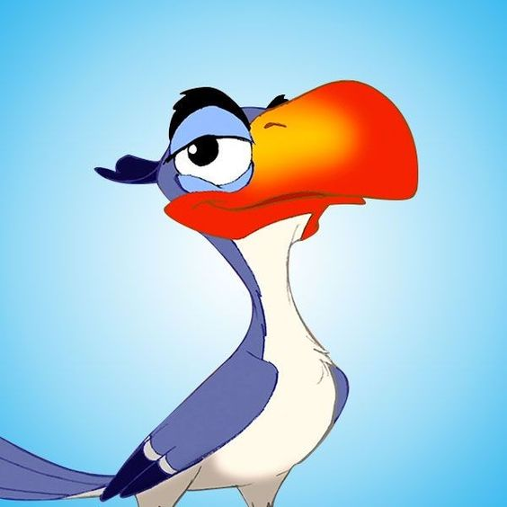

O rei leão
O Rei Leão (The Lion King) é o 32.º longa-metragem animado produzido pela Walt Disney Feature Animation e pela Walt Disney Pictures. Foi dirigido por Roger Allers e Rob Minkoff, com roteiro creditado a, Irene Mecchi e Jonathan Roberts , e música de Elton John com letras de Tim Rice. O filme narra a história do jovem leão Simba (Matthew Broderick), que sente-se culpado pelo assassinato do seu pai, o rei Mufasa (James Earl Jones), e foge do seu Reino, sem saber que a morte foi orquestrada pelo seu tio Scar (Jeremy Irons) para tomar o poder.
O Rei Leão foi lançado em 15 de junho de 1994 e foi aclamado pela crítica e público, que elogiou o filme pela sua música, enredo e animação, ganhando dentre os vários prêmios, o Oscar de Melhor Trilha Sonora Original (Hans Zimmer) e Melhor Canção Original ("Can You Feel the Love Tonight", de Elton John e Tim Rice), e o Globo de Ouro de Melhor Filme Comédia ou Musical.
Enredo
Simba é apresentado como o futuro rei nas Terras do Reino, governadas por seu pai, o sábio e benevolente Mufasa. A vida é cheia de aprendizado e diversão para Simba, que tem como melhor amiga a jovem leoa Nala.O tio de Simba, Scar, invejoso e ambicioso, deseja o trono para si. Ele elabora um plano maligno para eliminar Mufasa e Simba. Scar atrai Simba para um desfiladeiro, onde uma manada de gnus em pânico é solta. Mufasa salva Simba, mas é traído por Scar e morre. Simba, manipulado por Scar, sente-se culpado pela morte do pai e foge. No exílio, Simba encontra Timão e Pumba, um suricate e um javali, que o ensinam a viver despreocupadamente sob o lema "Hakuna Matata" (sem preocupações). Simba cresce longe das responsabilidades reais, mas seu passado o assombra. Nala, agora adulta, reencontra Simba e revela o caos que Scar trouxe ao reino. Convencido a enfrentar seu passado, Simba retorna para desafiar Scar. Simba confronta Scar, que revela a verdade sobre a morte de Mufasa. Uma batalha épica ocorre, resultando na vitória de Simba. Scar é derrotado e morto pelas hienas, suas ex-aliadas. Simba assume seu lugar como rei, restaurando a paz e a prosperidade ao reino. Ele e Nala têm um filhote, continuando o ciclo da vida.
"Para conseguir o que quer, você deve olhar além do que você vê."
Personagens
| Personagem | Descrição |
|---|---|
 |
Simba(do suaíli que significa "leão"), filho de Mufasa e Sarabi. Um jovem príncipe leão, que, na infância, foi acusado de ser o responsável pela morte do pai após um plano sórdido de seu tio Scar, que lhe convenceu a se auto-exilar para longe, lhe deixando muitos traumas. É o herdeiro legitimo das Terras do Reino. |
Mufasa(nome do último rei da Quênia), o rei das Terras do Reino, pai de Simba e marido de Sarabi. É um líder justo, amado e respeitado por todos os animais da savana, com exceção de seu irmão Scar, que tem inveja dele e planeja usurpar o seu trono. É morto após cair numa armadilha arquitetada por Scar - que joga a culpa sobre Simba |
|
Scar(do inglês que significa "cicatriz"), irmão de Mufasa e tio de Simba. Sádico, egoísta e irônico, possui inveja e amargura de Musafa, planejando matar o próprio irmão e expulsar o sobrinho das Terras do Reino para assumir o trono. Scar possui uma aparência diferente em contraste aos demais leões, possuindo juba preta e olhos esverdeados |
|
Sarabi(do suaíli que significa "miragem"), esposa de Mufasa, mãe de Simba e rainha das Terras do Reino |
|
Nala(do suaíli que significa "sorte"), a melhor amiga de Simba quando os dois são filhotes. Ela reencontra Simba anos depois, os dois acabam se apaixonando e ela tenta convencê-lo a voltar e enfrentar Scar. |
|
|  | Zazu, um calau que atua como mordomo e conselheiro real de Mufasa. Ele tenta impor ordem nos demais animais do reino de uma maneira rígida e metódica, embora não seja levado a sério devido ao seu tamanho diminuto. Após a ascensão de Scar ao trono, Zazu torna-se seu escravo pessoal |
 |
Timão e Pumbauma dupla de amigos que Simba conhece após sua fuga, e que decidem criá-lo, lhe apresentando o estilo de vida despreocupado, Hakuna Matata. Timão é um suricate bípede egocêntrico, preguiçoso e exagerado; Pumba (do suaíli que significa "atordoado", "desorientado") é javali gentil e de grande coração, mas que tem problemas de flatulência. Ambos são insetívoros |
Rafiki(do suaíli que significa "amigo"), um velho mandril, amigo de Musafa, que atua como xamã das Terras do Reino e é responsável pelos batizados dos filhotes recém-nascidos, entre eles o de Simba. Anos mais tarde, também é o responsável por abrir os olhos de Simba em relação a enfrentar o seu passado |
|
 |
Shenzi, Banzai e Ed(em suaíli, shenzi significa "pagão", "selvagem", "rude" ou "bárbaro" (como adjetivo) e banzai "esgueirando-se" ou "à espreita"), o trio de um bando de hienas-malhadas famintas que estão exiladas em um cemitério de elefantes, fora das proximidades das Terras do Reino. Tornam-se capangas de Scar e unem-se a ele para matar Mufasa e Simba, e assim tomar o reino. Shenzi é a líder temperamental; Banzai é o mais raivoso; enquanto Ed é o menos inteligente e mais aparvalhado |